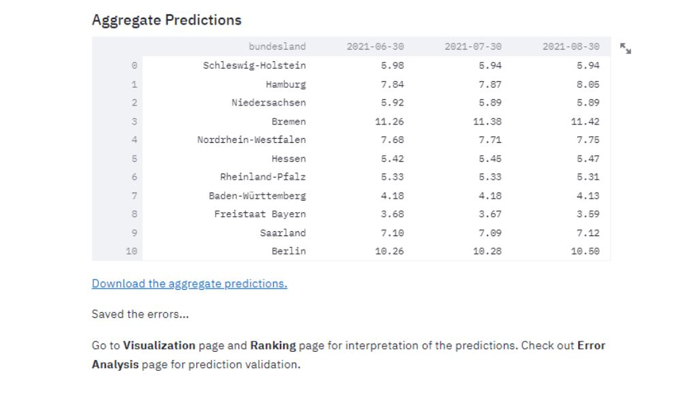

Predictions
This section focuses on getting the results from the model. The results will include unemployment rate predictions the next three months, for all 401 kreise. After the model it fitted, it is possible to download and visualize the predictions.
Video Documentation
The following video will walk you through this section and how to use the various interactive widgets.
Fit Model and Export Predictions
This page automatically takes the cleaned dataset and fits the model on it. The model being fitted is a Vector Autoregression (VAR) model, which is a multivariate forecasting algorithm used when two or more time series influence each other.
The model uses the PCA & K-means clusters. More on the model and clusters is explained on our journey the fitting might take a few minutes. After the model is fitted, a preview of the predictions table is showed.
The table has three columns, each one holding the unemployment rate predictions for one month, and each row is a different kreis.

After the model is fitted, it is possible to click the "Download the predictions" link and and xslx table with the predictions will be downloaded.
Aggregation of Predictions
The predictions from the County level are aggregated to the Bundesland and Country level using a weighted mean, weighted on the population of the kreise.

NOTE: The populations used to aggregate are data from the timeframe: December 31, 2018 - December 31, 2019, collected from corona-datenplattform.